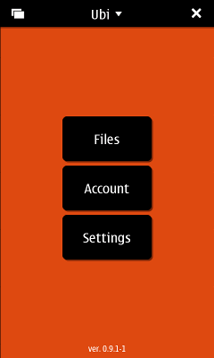
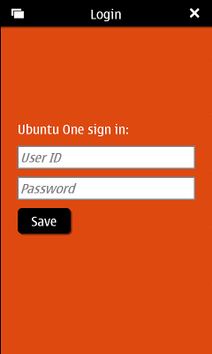
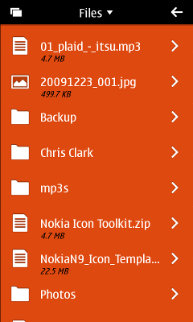
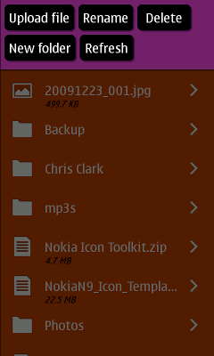
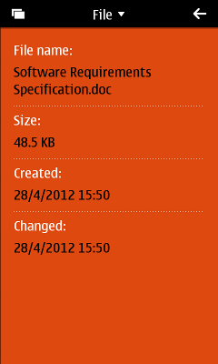
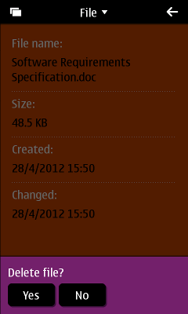
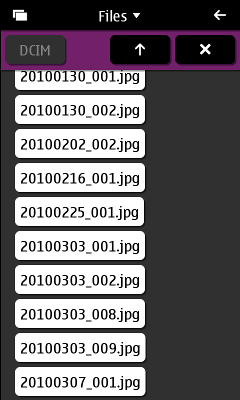
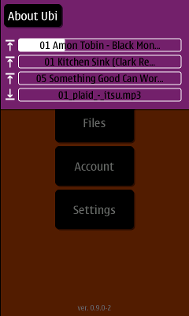

An unofficial Ubuntu One app for Maemo 5 and other Qt-enabled platforms
Ubi provides access to Ubuntu One cloud service. Initial version supports simple storage management tasks like: file Download, Upload and Deletion, but the plan is to provide other cloud features i.e. Notes editing and Contact synchronization.
At the moment Ubi is available only for Nokia N900.
The application can be downloaded via the application manager under the Network section if you have the extras-devel repository enabled.
Links:
       